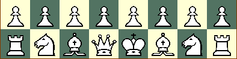
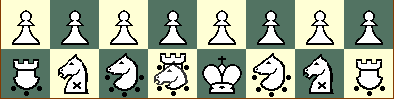
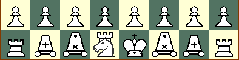

Fabulous FIDEs Lineup

Colorbound Clobberers Lineup
Nutty Knights Lineup
Remarkable Rookies Lineup
|  Fabulous FIDEs Lineup |
|
Colorbound Clobberers Lineup |
|
|  Nutty Knights Lineup |
|
|  Remarkable Rookies Lineup |
 | King
A King can move to any adjacent square, but never to a square where it can be captured. It may also `castle` with the piece that starts in the corner if neither the piece nor King has moved yet and there is nothing in between them. In castling the King moves two squares nearer the other piece and the other piece leaps to the far side of the King. You may not castle out of or through check, or if the King or other piece involved has previously moved. |
 | Pawn
A Pawn can move straight ahead one square, or two squares from its starting position. A Pawn captures by moving one square ahead and diagonally. If a Pawn reaches the far rank it promotes, changing into any non-pawn piece other than the King that started on the board on either side. The Pawn also execute a move called `En Passant`, or `in passing`. This allows a Pawn to take an enemy Pawn that has just moved two squares. |
| Knight
A Knight moves like an `L`, two squares vertically plus one horizontally, or two squares horizontally plus one vertically. It hops over any pieces on the way. | |
| Bishop
A Bishop moves any number of squares on a diagonal. It may not leap over other pieces. | |
 | Rook
A Rook moves any number of squares orthogonally on a rank or a file. It may not leap over other pieces. |
 | Queen
A Queen moves any number of squares in a straight line. It may not leap over other pieces. |
 | Waffle (Elephant + Wazir)
A Waffle either takes one step orthogonally, or jumps two squares diagonally. It hops over any pieces on the way. |
| FAD (Elephant + Ferz + War Machine)
A FAD can either step one square diagonally, or it can hop two squares orthogonally or diagonally. It hops over any pieces on the way. | |
| Bede (Bishop + War Machine)
A Bede moves any number of squares on a diagonal, or may jump two spaces orthogonally. It may not leap over other pieces when sliding, but may when jumping. | |
 | Cardinal (Knight + Rook)
A Cardinal moves any number of squares on a diagonal, or jumps like a Knight. It may not leap over other pieces when sliding, but may when jumping. |
 | Woody-Rook (War Machine + Wazir)
A Woody-Rook either takes one step orthogonally, or jumps two squares orthogonally. It hops over any pieces on the way. |
| Half-Duck (War Machine + Ferz + Extended leap War Machine)
A Half-Duck can either step one square diagonally, or it can hop two or three squares orthogonally. It hops over any pieces on the way. | |
| Short-Rook
A Short-Rook moves up to four squares orthogonally on a rank or a file. It may not leap over other pieces. | |
 | Chancellor (Knight + Rook)
A Chancellor moves any number of squares orthogonally, or jumps like a Knight. It may not leap over other pieces when sliding, but may when jumping. |
 | Fibnif (Narrow Knight + Ferz)
A Fibnif either takes on step diagonally, or jumps two squares forward and one outward, or jumps two squares back and one square outward. It hops over any pieces on the way. |
 | Forfnibakking (Forward Knight + Backwards Prince)
A Forfnibakking can make any of the four forward Knight's moves, jumping two forward and one outward or one forward and two outward, or may step a single square left, right, back or on the back diagonals. It hops over any pieces on the way. |
| Furlrurlbakking (Forward Rook + Backwards Prince)
A Furlrurlbakking moves any number of squares forward, left or right, or one step backwards or diagonally backwards. It may not leap over other pieces. | |
| Forfnifurlrurking (Forward Rook + Forward Knight + Prince)
A Forfnifurlrurking can make any of the four forward Knight's moves, jumping two forward and one outward or one forward and two outward, or may step a single square in any direction, or may slide any number of spaces forward or to the side. It hops over any pieces on the way when jumping like a Knight, but not otherwise. | |
DescriptionRalph Betza's Chess with Different Armies.In this game, each player chooses an army. Each of the four armies are equal in strength, and can be fairly marched against each other. Look at the listing above to see how pieces move. The game is then played like western chess, except that if an army other than the Fabulous FIDEs is chosen, different pieces pieces are used. Some general rules: Pawns may promote to any piece that started on the board on either side. So when playing Remarkable Rookies vs Fabulous Fides, a Pawn may promote to a Knight, Bishop, Rook, Queen, Woody-Rook, Half-Duck, Short-Rook or Chancellor. The King may castle with whatever piece initially occupies the spot normally occupied by the Rook. If the piece being castled with is color-bound (like the Colorbound Clobbers Bede), the King moves an extra square when castling long, and piece castled with one less square as to keep it on color. HistoryInvented by Ralph Betza.StrategyTBD.More information on Chess with Different Armies can be found at http://www.chessvariants.com/d.betza/chessvar/cda/index.html. |